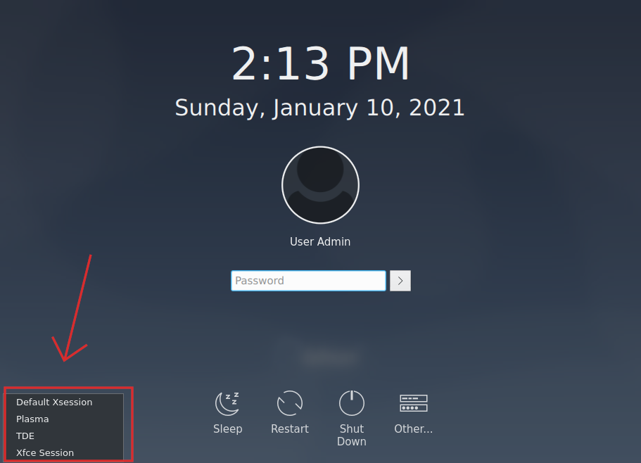

Why to choose Q4OS, brochure, rev. 12/2023
brochure
1. IntroductionThis paper presents the decisive reasons why a computer user should choose Q4OS as a main operating system for everyday use. We enumerate various exclusive Q4OS features and explain benefits resulting from using Q4OS.
Q4OS is a fast and friendly, desktop oriented operating system based on Debian Linux. Providing a set of dedicated utilities and specific optimizations, combined with a focus on getting a productive system easily. This makes it ideal for people who want to get a working environment tailored to individual needs and preferences. From this perspective, Q4OS is suitable for both newcomers as well as experienced computer users.
Thanks to unique Q4OS tools a user can rather easily achieve setup of a fitted system eliminating superfluous components and applications. Therefore Q4OS performs faster and more efficient, doesn't exploit memory and computing resources with useless tasks and processes.
Besides other features, Q4OS is distinguished by saving hardware resources, it runs great on brand new machines as well as legacy computers. While we develop Q4OS, we are trying to think a bit differently. Unlike the mainstream Linux distributions, we don't offer a complete system full of applications pre-installed out of the box, but a lean system armed with powerful tools for users to be allowed set it up according to their individual needs and preferences. Thanks to these smart Q4OS tools a user can rather easily achieve setup of a fitted system eliminating superfluous components and applications. Therefore Q4OS performs faster and more efficient, doesn't exploit memory and computing resources with useless tasks and processes.
The goal is to provide long-term supported system receiving security updates. This is exactly what Debian base guarantees. We prefer the Debian development model to keep the core system as immutable as possible. It results in a reliable and stable system that you can definitely rely on.
Stable means, once installed and configured, it just works for a long time with minimum maintenance and administrative interventions. We prefer the Debian development model to keep the core system as immutable as possible. Most of applications, including desktop environments, are maintained in their original major stable versions and receive security fixes only. Dedicated features are updated or included in testing versions with a conservative approach, upon thorough testing and verification.
Would you like to change the default desktop look and feel ? Install Lookswitcher from the software center to get a few original desktop themes and a one-click tool to easily switch between them. Select a theme you like and enjoy the new desktop appearance.
Lightweight, fast, efficient, in many ways surpasses competition. In our opinion, a highly underrated desktop environment. Mainstream Linux distributions don't support Trinity at all, but we love it so much, that Trinity is even a dedicated download option, right after the default Plasma desktop.
A unique dual desktop option makes possible setting up multiple desktop environments, for instance Plasma and Trinity, side by side without interfering with each other. Thanks to the careful optimizations, desktop environments are completely separated one apart each other, they don't interfere themselves at all. Get the dual desktop setup by selecting Trinity, or other supported desktop environment, in the Desktop profiler tool and install it easily alongside the default Plasma desktop, using a one-click style guide. Once installed, you can switch back and forth between different desktop environments upon login, just select the desired one at the login screen.

A typical configuration features more advanced Plasma and lightweight Trinity desktop installed side by side, carefully separated, both ready to run as needed. We strongly recommend installing desktop environments using the dedicated Desktop profiler tool, which takes care about proper configuration and installation of all the needed dependencies.
An exclusive way to put Linux alongside Windows. Just run a setup wizard from within Windows and install Q4OS as easily as any other application. Although installed within windows, Q4OS kernel takes full control of the hardware. That is much more efficient than running a virtual machine ... read more
In addition to the above and what to expect from a regular Debian system, Q4OS has got other interesting features. Native Q4OS utilities such as Desktop profiler, a convenient way for installing and configuring set of applications and tools, all in single click style. Software center, another powerful Q4OS tool. Installers for third party applications, support for x86/32bit as well as ARM architecture and even more.
Why to choose Q4OS, brochure, rev. 12/2023
{kind=link}